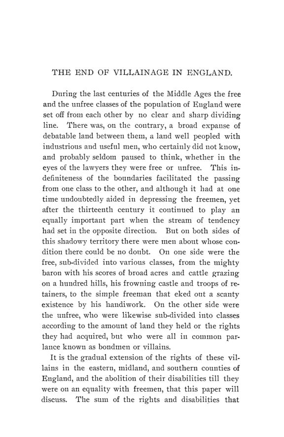

Page, 1900: a peste que trocou o trabalho servil por renda
Leitura: 10 min
Em 1900, Thomas Walker Page contou manor por manor como a Peste Negra, a escassez de braços e a fuga dos servos transformaram o trabalho obrigatório em renda em dinheiro na Inglaterra.


Upwood, condado de Huntingdon, 1252. Os inspetores da abadia de Ramsey anotam, item por item, o que deve Nicholas, filho de Herman, por uma virgata de terra, a unidade de cerca de 30 acres. Três dias de trabalho por semana para o abade, no que lhe for mandado, e um quarto dia arando uma faixa. Cada dia tem medida: debulhar 24 feixes de trigo ou 30 de cevada. Na colheita, cinco dias por semana, levando consigo mais dois homens. Além disso, pequenas taxas em dinheiro, um galo no Natal, cinco ovos na Páscoa e o segundo melhor de cada dez porcos.
O inventário abre The End of Villainage in England, de Thomas Walker Page, Ph.D., publicado em maio de 1900 como o nº 2 do vol. 1 da terceira série das Publications of the American Economic Association. Page comenta que é difícil entender onde Nicholas achava tempo para cultivar a própria terra. Seu antecessor, no reinado de Ricardo I, trabalhava um dia a menos por semana. O livro conta como esse arranjo acabou no leste, no centro e no sul da Inglaterra, a partir das contas dos administradores e das atas das cortes senhoriais guardadas em Londres.
O que fazia de alguém um servo?
Três obrigações, segundo Page: permanecer no manor até o senhor consentir na partida, servir como o senhor mandasse e entregar-lhe os bens se ele quisesse tomá-los. A lei do reino só protegia o servo, ou villain, “na vida e nos membros”: o senhor não podia matá-lo nem mutilá-lo, mas podia prendê-lo ou expulsá-lo. Na prática, o costume do manor limitava muito esse poder. E o trabalho decorria da forma de posse da terra: quem a tinha “em villainage” devia serviços, fosse servo ou homem livre.
A obrigação de ficar pesava pouco no século XIII. A licença para partir custava uma ferradura ou um alqueire de grão por ano, o chivage; a taxa para casar a filha fora do manor raramente passava de seis pence. Para Page, a restrição real era econômica: faltava procura pelo trabalho do servo em outro lugar.
A troca de trabalho por dinheiro já estava adiantada antes da peste?
Era a tese de Thorold Rogers, em 1866: pela metade do século XIV, poucos servos ainda prestavam serviços agrícolas. Depois da Peste Negra, os senhores teriam tentado restaurá-los, provocando a revolta de 1381. Cunningham, em 1890, discordou da cronologia; Ashley, em 1892, da explicação da revolta. Page propõe resolver a disputa pelos registros dos próprios administradores.
Por que a troca não avançara? Faltava, segundo Page, dinheiro em circulação para que os servos pagassem renda e o senhor contratasse. Nos manors, o salário dos trabalhadores livres era pago sobretudo em espécie. Em Aylton, em 1325, oito aradores contratados por ano recebiam 3 xelins e 6 pence em moeda, além de rações, valor que Page toma como a média; o maior que encontrou foi 7 xelins, em Somersham. Kent era a exceção, e Page cita Pollock e Maitland sobre as estradas de Londres ao litoral, por onde corria
“o dinheiro, o mais destrutivo solvente do poder senhorial” (“money, the most destructive solvent of seignorial power”)
O que a peste mudou?
A peste chegou à Inglaterra em 1348 e, segundo Page, matou quase metade da população. Muitas vezes, o grão ficou no campo por falta de braços. Os servos se recusavam a trabalhar; os livres cobravam preços exorbitantes. Em junho de 1349, a proclamação do rei Eduardo mandou que todos os que viviam do trabalho o oferecessem pelos salários de costume. Não funcionou. Na comparação de Page, a Alemanha de 1648 perdeu organização, trabalho e capital; o Sul americano de 1865, organização e capital; a Inglaterra de 1350, organização e trabalho.
Por que os senhores não apertaram os sobreviventes? Page dá três razões: o costume, a perda de braços nas próprias famílias dos servos e a falta de meios de coerção. As multas da corte senhorial não tinham subido e agora valiam menos que o salário de um trabalhador livre: em Warboys, em 1354, 102 pessoas foram acusadas de não trabalhar ou trabalhar mal.
A arma decisiva foi a fuga. Os senhores vizinhos recebiam os fugitivos e lhes davam terra nas mesmas condições oferecidas a homens livres; a indústria de tecidos oferecia emprego. Expulsar um servo deixara de ser ameaça: sobravam terras vagas. A peste também acelerou a economia monetária: ao matar metade da população, diz Page, dobrou a quantidade de meio de troca por habitante.
Como um manor passava do trabalho servil ao assalariado?
Page acompanha Stevenage, manor da abadia de Westminster. Em 1334, o administrador cultivava 325 acres com o trabalho de 28 servos, exceto o de tração. Em 1349, seis virgatas e um quarto ficaram sem ocupante.
Em Warboys, da abadia de Ramsey, a mudança foi mais lenta. Em 1380, os servos deviam 4.216 dias de trabalho, mas só 2.785 foram usados; os demais foram dispensados ou pagos a meio penny cada. Os serviços foram aliviados em 1413 e só desapareceram de vez em 1453.
Por que o senhor aceitava um preço que não pagava o trabalho?
Porque o preço era de costume. No século XIII, o servo que quisesse se livrar de um dia de trabalho pagava meio penny no inverno, um penny na primavera e no outono e um penny e meio no verão. No século XV, o senhor não conseguia cobrar mais, embora o trabalho contratado custasse várias vezes isso. Page conclui que o dinheiro recebido
“não era compensação justa pelo trabalho perdido” (“no fair compensation for the labor lost”)
O senhor encolhia a lavoura em vez de contratar tudo. E a pressão seguiu pela fuga: em 1410, 29 servos tinham deixado Houghton, e outros 20 Barton, dois deles meninos mandados à escola sem licença. Pouco depois, os serviços foram aliviados; Page atribui a mudança ao temor de que a terra ficasse deserta.
A revolta de 1381 foi contra um aperto dos senhores?
Page diz que não. Os homens de Kent lideraram o levante, e em Kent não havia servos. Aderiram camponeses de manors onde a troca estava quase completa, enquanto os de costume antigo continuaram a trabalhar. Cidades e trabalhadores livres participaram tanto quanto os servos: da lista de 287 excluídos da anistia, 157 eram de Londres e 230 eram artesãos. Para Page, pesaram os Estatutos dos Trabalhadores, os ataques franceses e o imposto por cabeça; os servos queriam livrar-se dos restos da servidão, e a revolta não alterou o ritmo da abolição.
O que restou da servidão?
O status durou mais que a forma de posse. A terra servil passou a ser provada pela cópia do registro da corte, o copyhold, protegida aos poucos pelos tribunais do rei. Em Woolston, a talha, que antes da peste chegara às vezes a 60 xelins por ano, caiu para 18 xelins em 1390 e 15 xelins e 8 pence em 1420; em 1511, não havia mais sinal dela. O último chivage registrado é de 1498, em Houghton: 8 pence. Fitzherbert escreveu em 1523 que em alguns lugares ainda havia servos. Os fugitivos foram para as cidades e os ofícios; Page liga essa liberdade de movimento ao crescimento urbano e à primeira lei inglesa dos pobres.
Na minha leitura
Na minha leitura, a força do livro está no método. Em vez de deduzir o que teria acontecido a partir de leis e crônicas, Page classifica mais de uma centena de manors, década a década, pela fração do trabalho feita por servos, e deixa a contagem arbitrar entre Rogers, Cunningham e Ashley. O mecanismo econômico que emerge é simples: a escassez de trabalho mudou o poder de barganha, e o instrumento dessa barganha não foi a lei, mas a opção de saída. Enquanto ninguém mais queria o trabalho do servo, a obrigação de ficar valia pouco; quando os vizinhos passaram a disputá-lo, multas e ameaças de expulsão perderam o efeito.
O caso também mostra como um preço nominal fixado por costume se desvaloriza quando a escassez relativa muda. O meio penny por dia era um contrato antigo que o senhor não conseguia reajustar, e o tabelamento de 1349 tentou, sem sucesso, impor o mesmo congelamento aos salários livres. Page acrescenta uma condição que costuma passar despercebida: trocar obrigações em espécie por renda em dinheiro exige moeda em circulação. A monetização foi pré-requisito do mercado de trabalho, não apenas consequência dele.
Glossário
- Manor
- domínio rural inglês com terras do senhor, terras dos camponeses e uma corte própria.
- Demesne
- parte das terras do manor reservada ao senhor e cultivada para ele.
- Villainage
- servidão: tanto o status pessoal do servo quanto a forma de posse da terra que obrigava a serviços.
- Virgata
- unidade de terra camponesa; em Upwood, 30 acres, e quatro virgatas formavam uma hide.
- Opera
- dias de trabalho devidos ao senhor, registrados nas contas do administrador.
- Comutação
- troca dos serviços de trabalho por uma renda anual fixa em dinheiro.
- Chivage
- pagamento anual do servo pela licença de morar fora do manor.
- Merchet
- taxa paga ao senhor para casar a filha, sobretudo fora do manor.
- Talha (tallage)
- tributo cobrado pelo senhor dos servos, em valor que ele mesmo fixava.
- Copyhold
- posse de terra provada pela cópia do registro da corte senhorial, sucessora da posse servil.
- Estatutos dos Trabalhadores
- leis do pós-peste que tentaram manter os salários nos níveis de costume.
Fontes
- The End of Villainage in England (pp. 3–99). JSTOR · Internet Archive (PDF)
- Sumário da edição no JSTOR: Publications of the American Economic Association, 3ª série, vol. 1, nº 2.
Documento em domínio público (EUA, publicado antes de 1931), via JSTOR Early Journal Content e Internet Archive. Resumo e comentário do autor deste site, sem afiliação com a American Economic Association. Encontrou um erro? Escreva: a correção é publicada no próprio texto, com data.
← Nº 53 · Ithaca, 1899: o truste, o especulador e a moral do economista Nº 55 · Quem paga o império? As finanças coloniais em dez sistemas fiscais →